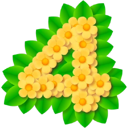

 Pikmin 4
Details
Description
Meet Pikmin, small, plantlike creatures you can grow, pluck, guide, and send into battle with enemies multiple times their size! These loyal, curious helpers come in different types, including fire-resistant Red Pikmin and brand-new Ice Pikmin. The fate of your Pikmin is yours to decide—will you carefully avoid danger or rush into situations despite potential...losses?
Create your own explorer and navigate a big planet from a pint-sized perspective
Customize your look then embark on a journey to find and rescue fellow explorers. Traverse a world that seems larger than life as you see everyday objects like plants, benches, and pots tower over your explorer and Pikmin. Revisit these diverse areas at night and use brand-new Glow Pikmin to light the way forward...just watch out for berserk wildlife.
Go explorer vs. explorer in Dandori Battles
In the world of the Pikmin™ 4 game, explorers like to get in on some friendly competition. Throughout the story you’ll encounter characters itching to compete in Dandori Battles—see who can collect the most objects within the time limit. Gathering plenty of Pikmin to carry even more treasure is a key part of Dandori Battle strategy. You can also face off in Dandori Battles on the same system against a friend or family member, with more stages to play as the story progresses.
If a large group of Pikmin becomes a tasty treat for a hungry creature, use the Rewind Time feature to correct your mistake. Of course, this can also be used for less disastrous mistakes or to simply try a different approach. Get some extra help from another player who can toss pebbles at enemies and use items in the main campaign.
You get a space dog, too! Oatchi (pronounced oat-chee), resident good boy and dependable partner, can help with things like smashing obstacles and carrying you and your Pikmin throughout your adventure. With the miniscule Pikmin and a capable canine in tow, no challenge is too big!
Give the adventure a try with a free Nintendo eShop demo! Pluck Pikmin, tote treasures, and play until 1500 Sparklium is collected to power up the Rescue Corps spaceship, the S.S. Shepherd. Upon completion, earn a reward for the Pikmin Bloom app*. You can also transfer save data to the full version of the Pikmin 4 game, once purchased!